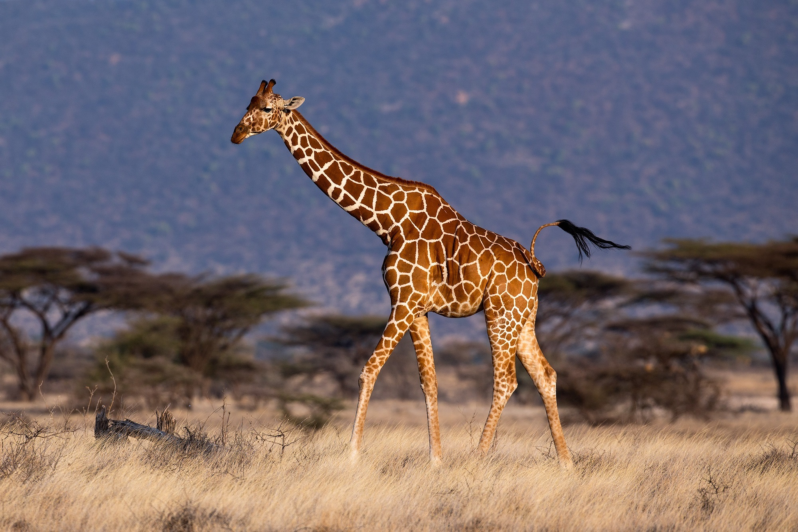

jirafa (Giraffa camelopardalis)

La jirafa es un mamífero que pertenece a la familia Giraffidae. Estos mamíferos herbívoros son propios de África y, de hecho, son los animales terrestres más altos del mundo. Habitan en el sur del Sahara y norte de Botsuana en espacios abiertos, pastizales y sabanas.
Se alimentan de ramas y hojas de árboles, incluso con espinas, ya que su poderosa lengua las permite digerir fácilmente. Debido a que se alimenta de alimentos que contienen agua, puede pasar mucho tiempo sin beber gota de este líquido.
Para tener mejor acceso a las hembras en celo, los machos suelen realizar enfrentamientos con el cuello llamado Necking, donde la mayoría de las veces no son graves, aunque sí pueden ser fatales. Una vez realizada la cópula, la gestación dura de 14 a 15 meses de donde nace una sola cría. La madre, estando de pie, expulsa el saco embrionario que se rompe tan pronto la cría cae al suelo. Al nacer pueden medir dos metros de altura y pesar de 50 a 55 kg.